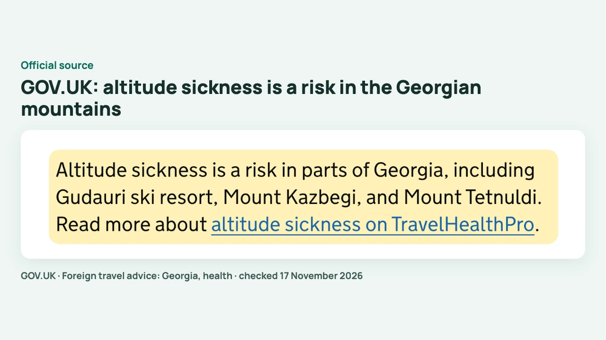
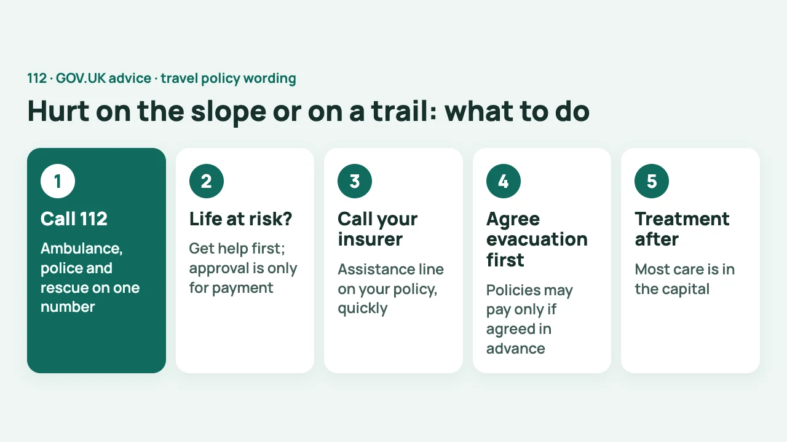
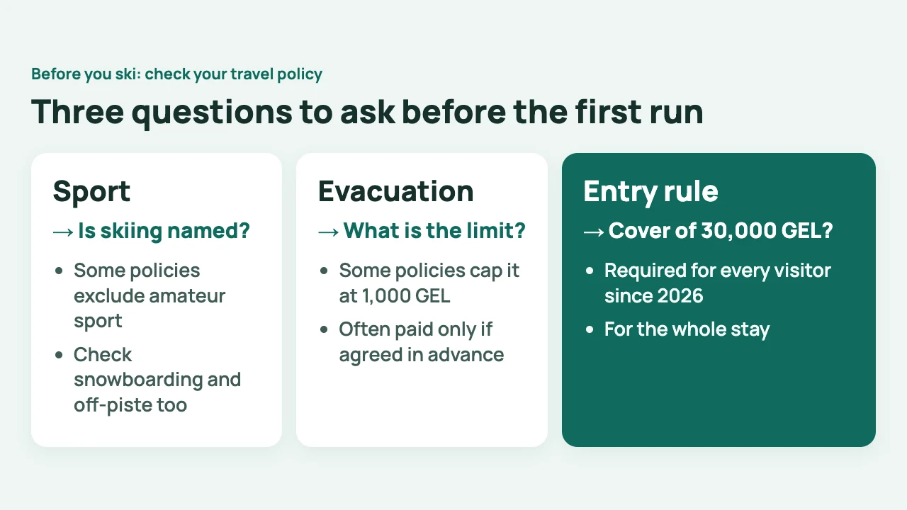

This page is about Georgia the country, not the US state, and is part of our guide to healthcare in Georgia. Checked on 17 November 2026.
How high is Gudauri? Altitude at the country's mountain resorts
Lifts at the resort run from about 2,000 m to 3,276 m, according to Georgia's tourism administration. It is 120 km from the capital, a drive of 2 to 2.5 hours, and the season lasts from early December to mid-April.
Other high areas include Bakuriani, Mestia in Svaneti, Goderdzi and Stepantsminda (Kazbegi); we found no official elevation figures for them.
In winter, snow can block roads and bridges in the mountains, especially in remote areas, and landslides are common, says the UK government's safety advice. So reaching a hospital can take longer than you expect.
Altitude sickness in Gudauri, Kazbegi and Tetnuldi
It is a real risk. The UK government's health advice for Georgia says: "Altitude sickness is a risk in parts of Georgia, including Gudauri ski resort, Mount Kazbegi, and Mount Tetnuldi."

GOV.UK points readers to TravelHealthPro's altitude illness factsheet. It says:
- It usually starts above 2,500 m (some people get it lower), typically 6 to 10 hours after the climb.
- Typical sign: a headache plus nausea, vomiting, loss of appetite, dizziness, tiredness or weakness. Treat any new symptom after going up as this illness until proven otherwise.
- Go no higher and rest; ordinary painkillers (ibuprofen or paracetamol) and anti-nausea medicine can help. Symptoms often settle in 1 to 3 days.
- Go down if you feel worse or are no better after 1 to 2 days.
- Severe forms, with swelling of the brain or lungs, are life-threatening: get urgent medical help and go down.
Go up gradually, with rest days. With a long-term illness, see a doctor before the trip.
What to do after a ski or hiking injury in Georgia
Call 112 first. Then call the assistance line on your policy. If someone's life is at risk, do not wait for that call: approval matters only for payment.
One number reaches ambulance, police, fire and rescue services around the clock; calls can be handled in English. Say where you are, what happened and which service you need, and stay on the line.
It works without a SIM card, and the official emergency app can share your location: see how to call an ambulance.
The state pays for the ambulance call-out, but not for a visitor's hospital treatment. The UK government's advice adds: "Contact your insurance company quickly if you're referred to a medical facility for treatment."

Who helps on the slopes: ski patrols and mountain rescuers
The interior ministry has run such teams. In December 2021, Georgia's Ministry of Internal Affairs (MIA) said police patrols had started work at winter resorts.
At that time the officers were trained and equipped, had worked at resorts since 2016 and covered Gudauri, Mestia (including Hatsvali) and the Goderdzi Pass, with mountain rescuers of the MIA's Emergency Management Service alongside them. We found no announcement for the 2026–27 season, so if you cannot see a patrol, call 112.

Off-piste skiing and avalanches
It is dangerous, and conditions are hard to check. UK government safety advice warns: "Off-piste skiing is very dangerous. It can be difficult to get accurate information on mountain conditions, including avalanche risks."
For extreme activities, it suggests specialist guides, and notes that many policies "will not cover damage to rental equipment or skiing off-piste without a guide".
Where to get medical help in the mountains
Plan for the main care to be in the capital. The UK government's health advice says: "Medical facilities in Tbilisi are available but can be expensive. Outside Tbilisi, medical facilities are limited."
At Gudauri, the National Tourism Administration lists "a fully equipped medical station and an emergency response service" (resort page). We found no official address, hours or phone number for it.
We also found no official Ministry of Health list of medical points at Bakuriani, Mestia or Stepantsminda.
Is there a hospital in Mestia?
We could not find an official description of a hospital there or of its hours. If you are hurt, dial 112.
Mountain rescue and helicopter evacuation
Rescue in the high mountains depends on weather and distance. One official example shows how it can go.
In a 2017 operation on Mount Tetnuldi, one of two Polish tourists fell ill and could not go on. The emergency service's mountain team flew in on a Border Police helicopter. Late at night, at 3,950 m, bad weather stopped them bringing the pair down, so the team stayed with them and took both to safety at dawn.
We found no official rules on who decides to fly, when, or at what cost.

After the injury: treatment in Tbilisi
For follow-up on a fracture or a sprain, see a trauma specialist in the capital. You can compare orthopaedic and trauma doctors in Tbilisi with patient reviews. Before the visit, call the assistance line on your policy.
Does travel insurance pay for ski injuries in Georgia?
Not under every policy. IRAO's ordinary visitor cover, sold on 100doc.ge, does not pay for injuries from amateur sport.
Its wording, clause 9.1.22, does not pay "Expenses of injuries and their complications received during participation in professional, amateur and extreme sport activities". The wording never names skiing; in our reading, "amateur sport" includes a holiday on marked runs too.
Other points in the same wording:
- Medical evacuation: a limit of 1,000 GEL, only if agreed in advance with the service centre named in your documents.
- Search and rescue: not mentioned.
- Natural disasters: excluded. The wording does not say whether an avalanche counts.
- Chronic and pre-existing conditions: excluded, except urgent care to save life.
- Territory: Georgia only.
- Assistance line: +995 32 2 949 949. Call it as soon as you can.
Entry is a different matter. Since 1 January 2026, visitors must have health and accident cover of 30,000 GEL, as Georgian law requires (the 2026 entry insurance rule). Whether that cover pays out for winter sports depends on its wording.
What to check in your policy before you ski
What does ski insurance cover? Only what the wording names. Check that:
- skiing and snowboarding are named as covered;
- trips outside marked runs are covered, and whether only with a guide;
- medical evacuation is covered, with its limit and whether it must be agreed in advance;
- mountain rescue and helicopter transfer are named;
- total cover is at least 30,000 GEL, for the entry rule;
- damage to rental equipment is covered.

Hiking and trekking: does travel insurance cover you?
It depends on the wording: ask the company in writing before you go. Comparing travel insurance for hiking? Read the exclusions first.
The IRAO wording does not mention hiking, and its sport exclusion does not say where a walk ends. Near the administrative boundary lines, UK advice suggests hiring a professional guide.
Frequently asked questions
How high is Gudauri ski resort?
Its lifts run from about 2,000 m to 3,276 m, according to the national tourism administration.
Is altitude sickness a risk in Kazbegi?
Yes: UK government health advice names the mountain as a risk area. With a new headache after going up, go no higher and rest; go down if it gets worse.
Is ski insurance mandatory in Georgia?
We found no separate rule. Visitors need health and accident cover of 30,000 GEL; whether it pays out after a fall on the piste depends on its exclusions.
Does travel insurance cover skiing in Georgia?
Ordinary IRAO visitor cover does not pay for injuries from amateur sport (clause 9.1.22), and UK advice notes that many policies do not cover off-piste trips without a guide. Check your own wording.
Who do I call if I get hurt skiing in Georgia?
Dial 112 first. Then call the assistance line on your policy; in a life-threatening emergency, do not wait for its approval.
Is there a hospital in Gudauri?
The national tourism administration lists a fully equipped medical station and an emergency response service at the resort. The capital, with fuller care, is about 120 km away.
Sources
- GOV.UK travel advice: health
- GOV.UK travel advice: safety and security
- TravelHealthPro: altitude illness factsheet
- Ministry of Internal Affairs: patrols at winter resorts, 2021
- Ministry of Internal Affairs: operation on Mount Tetnuldi, 2017
- Georgian National Tourism Administration: Gudauri in winter
This guide is general information, not medical advice: the doctor decides on your treatment.